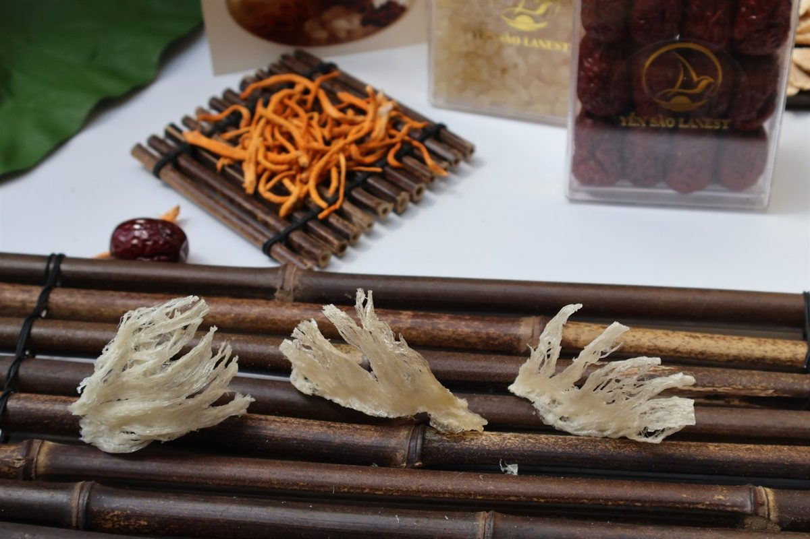
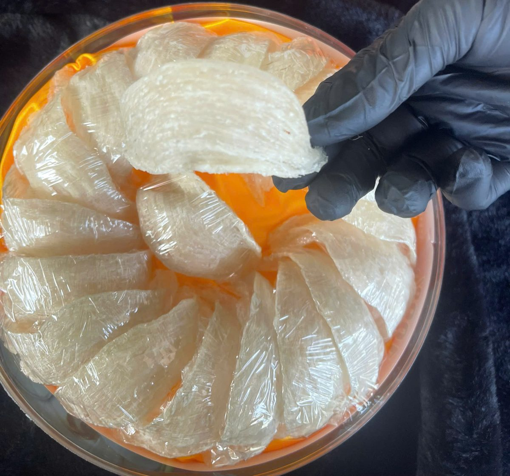

Chân Yến Và Tổ Yến Khác Nhau Thế Nào, Nên Chọn Loại Nào?
Yến Sào Lanest · Đăng ngày 15/11/2026

Đứng trước mấy hộp yến tinh chế, nhiều người phân vân: chân yến và tổ yến khác nhau ra sao, mua cái nào? Cả hai đều từ cùng một tổ yến, chỉ khác phần tổ, nên sợi, cách ngâm và cảm giác khi ăn cũng khác. Bài này đặt hai loại cạnh nhau để anh chị chọn đúng theo khẩu vị và cách dùng của nhà mình.
Ba miếng chân yến tinh chế: phần gốc tổ, sợi dày, xòe ra như rễ cây
1. Chân yến là gì, nằm ở đâu trên tổ?
Tổ yến có hình chén, bám vào vách nhà yến. Chân yến là phần gốc của tổ, nơi chim yến dệt những sợi đầu tiên để cố định tổ vào vách. Vì phải giữ cả tổ, phần này có sợi dày, đan chặt, chắc nhất. Nó không cong đều như thân tổ, hình dạng không đều, có khi thấy rõ phần "đế" bám vách.
Phần còn lại là thân tổ: thành tổ mỏng hơn và phần bụng bên trong với sợi mảnh như xơ mướp. Khi người ta nói "tổ yến", thường là nói tới cả cái chén còn nguyên dáng, hoặc yến sợi đã đắp lại thành tổ. Bảng chia phần tổ đầy đủ có trong bài các loại tổ yến.
2. Đặt cạnh nhau: chân yến và tổ yến khác gì?
| Tiêu chí | Chân yến | Tổ yến (thân tổ, sợi) |
| Vị trí | Gốc tổ, chỗ bám vách | Thành tổ và phần bụng trong |
| Hình dạng | Không đều, sợi dày, đan chặt | Hình chén hoặc đắp lại thành tổ |
| Sợi khi chưng | Dai nhẹ, giòn sần sật | Mềm, dai nhẹ, nở đều; sợi non thì mảnh và tơi |
| Mùi vị | Thơm, vị đậm hơn | Thơm dịu, vị thanh |
| Ngâm (loại đã làm sạch) | 30–45 phút | 15–20 phút (loại 50% sợi: 20–30 phút) |
| Hợp với | Người thích ăn có độ giòn, vị yến rõ | Người thích sợi mềm, dễ ăn; quà biếu cần dáng tổ đẹp |
Tính theo phần tổ, chân yến là nơi có hàm lượng đạm cao nhất, khoảng 55–60% khối lượng khô. Nhưng nói "chân bổ hơn" rồi chỉ ăn chân thì chưa hẳn đúng: cả hai đều là yến thật, chọn loại nào nhà mình ăn đều đặn được mới là chuyện chính.
3. Chân yến thô và chân yến tinh chế
Giống tổ yến, chân yến cũng có hai mức làm sạch:
- Chân yến thô: sau khi thu hoạch, phần chân được tách riêng, chỉ làm sạch nhẹ bên ngoài: nhặt bớt lông, tạp chất lớn, bụi. Không ngâm nước, không tẩy trắng. Màu trắng ngà hoặc vàng nhạt tự nhiên. Mua về, anh chị ngâm nước sạch 1–2 giờ cho mềm sợi rồi dùng nhíp nhặt sạch lông tơ còn sót.
- Chân yến tinh chế (chân yến sạch lông): đội thợ đã làm sạch hoàn toàn bằng tay, nhặt lông tơ, giữ màu ngà tự nhiên, không hóa chất hay chất tẩy trắng. Về nhà chỉ cần ngâm 30–45 phút, rửa nhẹ rồi chưng.
Trong một buổi họp đội, người sáng lập Lanest giải thích rằng màu kem, cam vàng nhẹ là đặc tính tự nhiên của tổ yến, còn chuyển vàng đậm hay đỏ mới là hàng hỏng, phải loại. Chân yến cũng vậy: ngả vàng nhạt không có nghĩa là yến kém. So sánh kỹ hơn giữa hai mức làm sạch có trong bài tổ yến thô và yến tinh chế.

Một tổ yến còn nguyên hình chén: mép dày phía dưới là chân, phần thành mỏng là sợi
4. Ngâm và chưng: đừng dùng chung một mốc thời gian
Đây là chỗ hay sai nhất khi nhà đang quen chưng tổ rồi chuyển sang chân. Sợi chân dày và chặt hơn, nên cần ngâm lâu hơn mới nở mềm:
- Ngâm nước sạch: chân yến tinh chế 30–45 phút; tổ yến tinh chế phần lớn 15–20 phút. Yến thô, dù là chân hay tổ, ngâm 1–2 giờ rồi nhặt lông.
- Không ngâm quá lâu. Thời gian ngâm là kỹ năng nghề: ngâm quá tay thì sợi bở, mất độ giòn.
- Chưng cách thủy 20–30 phút cùng đường phèn, táo đỏ, hạt sen hoặc đông trùng hạ thảo tùy khẩu vị. Chân yến còn hợp nấu chè, súp.
Các bước chi tiết và cách nhận biết yến chín có trong bài chưng yến cách thủy bao lâu.
5. Vậy nên chọn chân yến hay tổ yến?
- Thích ăn có độ giòn, vị yến đậm: chọn chân yến tinh chế.
- Người lớn tuổi, trẻ nhỏ, thích sợi mềm dễ ăn: tổ yến tinh chế, nhất là loại sợi non (phần bụng tổ, sợi mảnh, dễ nở).
- Mua làm quà, cần mở hộp ra là đẹp: tổ còn nguyên dáng như rút lông khô, hoặc tinh chế 100% sợi.
- Đã quen tự nhặt lông, muốn xem yến nguyên trạng: chân yến thô hoặc tổ yến thô. Trong tài liệu sản phẩm của Lanest, chân yến thô được ghi là lựa chọn tiết kiệm hơn tổ yến nguyên cho người muốn dùng yến nguyên chất.
- Muốn tiện chia từng lần chưng: xem thêm bài yến vụn và yến chia viên.
Anh chị cũng có thể mua cả hai, đổi qua lại trong tuần cho đỡ ngán. Yến tinh chế ở Lanest, kể cả chân yến, đóng hộp hút ẩm 50g và 100g; chọn cỡ nào cho vừa nhà mình thì xem bài hộp 50g hay 100g.
6. Bảo quản chân yến sau khi mở hộp
Chân yến tinh chế sau khi mở hộp nên đậy kín, để ngăn mát và dùng trong vòng 6 tháng. Yến đã ngâm mà chưa chưng thì cất lạnh, dùng trong 1–2 ngày. Cách cất từng loại có trong bài cách bảo quản tổ yến.
Yến là thực phẩm bồi bổ. Sản phẩm này không phải là thuốc và không có tác dụng thay thế thuốc chữa bệnh. Người đang điều trị bệnh hoặc đang mang thai nên hỏi ý kiến bác sĩ về lượng dùng.
Câu hỏi thường gặp
Chân yến có phải là yến vụn không?
Không. Chân yến là phần gốc tổ, sợi dày và chắc. Yến vụn là những mảnh rơi ra trong lúc làm sạch, được đắp lại thành tổ hoặc chia viên.
Chân yến ngâm bao lâu?
Chân yến tinh chế ngâm nước sạch 30–45 phút. Chân yến thô ngâm 1–2 giờ, sau đó nhặt sạch lông tơ trước khi chưng.
Chân yến có bổ hơn tổ yến không?
Tính theo phần tổ, chân yến có hàm lượng đạm cao nhất, khoảng 55–60% khối lượng khô. Còn ăn loại nào tùy khẩu vị: thích giòn chọn chân, thích mềm chọn tổ.